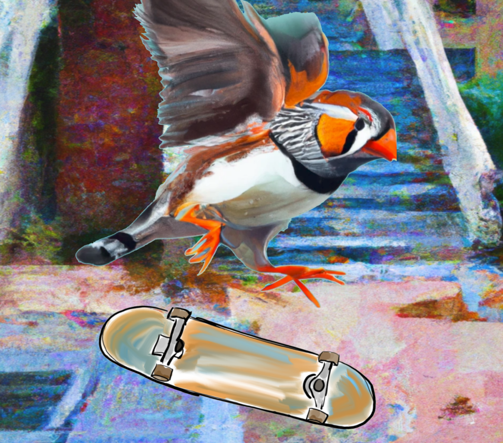
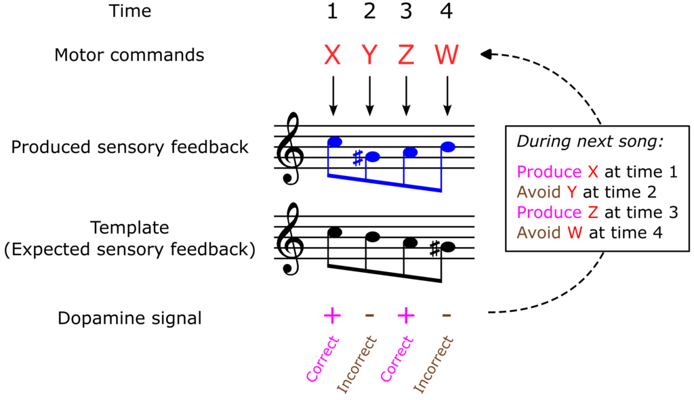
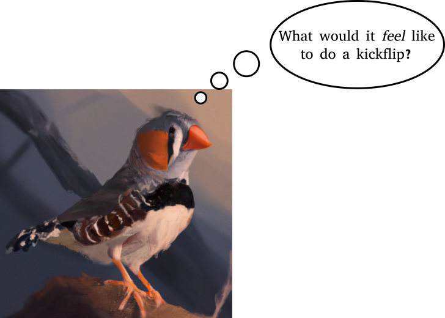

How a zebra finch would learn to kickflip
A neurospeculation about the power of visualization in learning complex motor skills.
I believe we have much to learn from animals, even about learning itself. Song learning in the zebra finch Take the zebra finch, for instance, who spends its youth learning to sing a specific song that will later help attract a mate. To do so, the young finch first learns a song template–-a memory or representation of what the song would sound like if sung correctly, or more explicitly of the sensory feedback the correct song is expected to produce. To learn the template it listens to its father (or another “tutor bird”) sing over and over, then after a few weeks begins trying to produce the song itself. While the early attempts are mostly babbling, as the weeks progress the song becomes more and more coherent, eventually crystallizing into a single, reliable song it will sing throughout adulthood. The importance of the song template Why is the template so important? First, the template allows the bird to recognize when it has produced the song correctly. This means it can practice on its own, without having to rely on another bird to listen and give feedback. Moreover, this recognition is graded, so the bird can tell when its song was partially correct, rather than relying on a pure all-or-none signal to guide its learning. In other words, the template unlocks a recognition-based objective function that the bird can in principle use to learn to sing. Second, the template enables the bird to construct a high-resolution critique of its performance, likely using its dopamine system. In general, dopamine is thought to compute mismatches between expectations and reality. In the zebra finch dopamine is poised to compute the difference between the expected sensory feedback corresponding the correct song and the actual sensory feedback produced when the bird attempts to sing. What's more, instead of only signaling, say, a final mismatch score at the end of a song attempt, dopamine in the finch is thought to perform a moment-to-moment evaluation of song across many timepoints. For example, if the sounds produced by the song were correct at times 1 and 3 but incorrect and times 2 and 4, the dopamine signal would be high at times 1 and 3 and low at times 2 and 4. Thus, the template allows the creation of a multi-dimensional, i.e. higher resolution, evaluation, which is far more informative than a single final score.
Simplified schematic of how dopamine may guide song learning in the zebra finch. Finally, the dopaminergic critique in turn allows the bird to efficiently update its motor program to improve its song. Suppose, for instance, that the motor program was represented by a set of real-valued motor commands [x1, x2, x3], corresponding to signals sent to the vocal muscles at times 1 through 3. And suppose that on song attempt n the bird tests a slight modification of those motor commands: [x1+∆1, x2+∆2, x3+∆3]. The resulting dopaminergic critique will also be a vector [d1, d2, d3] of the same dimensionality as the motor program, indicating which modifications were better and worse. This unlocks a simple update rule: if the dopamine signal is large at time t, update the motor program by letting xt → xt + ∆t ; if the dopamine signal is weak or negative at time t, however, then either leave xt unchanged (or even better, bias it away from xt + ∆t ). In other words, whichever candidate modifications to the motor program worked well, keep, and the others forget about. Mathematically, this corresponds to moving, at least approximately, in the direction of the gradient of the correct-song-recognition objective function with respect to the motor program. Altogether, the above suggests that the song template essentially enables the bird to learn via a natural gradient-descent algorithm mediated by dopamine. Indeed, gradient descent is the bread-and-butter of modern machine learning algorithms, being far more efficient than pure trial-and-error learning, since it allows one to take incremental but guided steps towards an objective. (Incidentally, this algorithm in the songbird brain can also be executed in principle with purely local learning rules; see Fee and Goldberg 2011.) Without the template, or if the bird only had access to a final evaluation signal at the end of each song attempt, it would take much longer to learn since there would be much local less guidance available, and such algorithms would not scale well to longer, more complex motor sequences. How can we use these ideas to improve our own learning strategies? The missing template in naive motor learning If you’ve ever tried to learn a difficult motor skill, say, a kickflip on a skateboard, you might have naively (I certainly have) tried something like the following: (1) Memorize a list of which movements to produce when by watching and talking to others. (2) Get on a board yourself and attempt to consciously recall and implement that list of movements. (3) Upon failure, study the movements of others in even greater detail to understand what went wrong. (4) Repeat until you succeed. Indeed, the plethora of online instructional videos that depict in ever increasing detail exactly how you should move each body part at each point in time for different types of sporting maneuvers can make it seem like this strategy is the way to learn, and if it’s not working all you’re missing is more grit or determination. But that’s not necessarily the case. The zebra finch suggests the above strategy lacks something absolutely fundamental: the creation of a template, which is very much not a memorized list of motor commands. The template bequeathed by the tutor bird to his protege is not a list of instructions about which vocal muscles to move when. Instead, the template is the expected pattern of sensory feedback, in this case the auditory feedback produced by song, that would occur if the sequence of motor commands were produced correctly. Beyond the zebra finch, one might conjecture that spending time building up an internal template of the sensory feedback generated by performing the skill correctly might drastically accelerate the learning process, by enabling your brain to naturally engage an ancient, gradient-descent algorithm implemented by dopamine. But now we encounter a problem. The difference between music and other motor skills With song, or music in general, one can learn a reasonable template for the correct sensory feedback just by listening to someone else, since the relevant sensory signal is primarily auditory. In other words, by listening to someone else sing you can immediately get a pretty good idea of what it would sound like to sing that song yourself (modulo differences in timbre, etc.). You could then engage your dopamine system to learn the motor sequence that produces the auditory feedback that matches the template. Watching someone else do a kickflip, however, is a totally different sensory experience from what it would feel like to do a kickflip yourself. For one, if you were the one doing the kickflip you probably wouldn’t be able to see the board very well, except maybe out of the corner of your eye. More importantly, when you do a kickflip your body moves in a rather complex fashion, producing a vastly different sequence of tactile and proprioceptive (how your limbs are oriented in space) feedback signals than those you experience sitting at your desk watching a YouTube video. Therefore, for most motor skills you cannot learn a template of the associated sensory feedback just by watching or listening to someone else. Visualization/imagination as a means for template building What you can do, however, is visualize or imagine what it would feel like to perform the skill correctly. The visualization process provides the crucial bridge between memorizing a list of body movements and internalizing a template of the tactile, proprioceptive and visual feedback that you would actually experience upon executing the skill correctly (we’ll assume sound, smell, and taste don’t play that much of a role here). Then when you go to physically practice the skill you will be armed not only with the list of movements but with at least a rudimentary template of expected pattern of real sensory feedback for the skill.
As in the zebra finch, this template then unlocks the potential for a much higher resolution critique and directed improvement of your performance, possibly by engaging your brain’s dopamine system in a very natural and more efficient manner. In other words, don’t evaluate your performance based only on whether the kickflip succeeded or not, then try to haphazardly infer which particular movements were the cause of the success or failure. Instead, spend your time comparing how the attempt actually felt to how it was supposed to feel. Indeed, ask any professional athlete that excels at learning new maneuvers in their sporting domain, and they’ll tell you just how important visualization is to the learning process. How to improve your visualization capabilities While the visualization process itself is not necessarily easy, and indeed requires a bit of a steady mind, there are at least a couple tips for making it more efficient. First, if you’ve never stepped on a skateboard before, it’s going to be hard to accurately visualize what a kickflip feels like. However, the more time you spend on moving around on the board and possibly learning a few easier tricks, the easier it becomes to visualize within the domain of skateboarding in general. For instance, take a motor skill you’re already good at, even as simple as typing on a keyboard. Because you already know how to type, it’s probably not too difficult to imagine what it would feel like to type a new sentence, even if you’ve never typed that particular sentence before. Similarly, the more familiar you become with a certain domain of motor skills, the easier it will become to visualize new motor sequences within that domain and to develop an accurate sensory feedback purely through visualization. Indeed, any good instructor will tell a beginner that they’ll have far more success building up towards a complex skill rather than going for the most difficult maneuver right off the bat. Second, avoid excessively visualizing sensory feedback sequences that you know are incorrect. This may sound obvious, but it can be tempting after a failed attempt to visualize that failed attempt over and over. While to some extent visualizing a failure can be useful for the sake of analyzing what went wrong or comparing it to a correct template, if a good template is not yet established then overly visualizing an incorrect sensory feedback sequence may interfere with one’s ability to visualize a more accurate one. For instance, if most of your visualization consists of what it feels like to fall off the board, then when you attempt to visualize what it feels like to succeed there may be bias toward visualizing falling off the board instead. Third, when you do happen to perform the skill correctly, take a break and spend time visualizing what it felt like to do so. In other words, take advantage of the opportunity to update both your template of what it feels like to perform correctly, as well as your motor program that produced that sensory feedback. Summary and remarks The zebra finch--one of neuroscience’s central model organisms for motor sequence learning--learns to sing by using a sensory feedback template. This likely allows it to efficiently guide its learning using a moment-to-moment dopamine signal that guides a gradient descent algorithm over its motor program. We can probably use such templates and dopamine signals too, but unlike in the case of song or music, for most motor skills they don’t come for free just by watching or listening to others. Instead we must spend time creating the template through visualization, which becomes easier the more familiar we become with a specific domain of motor skills. Indeed, many professional athletes will tell you how important visualization is to their training regimens, but in most instructional videos it is completely ignored or only casually remarked upon. But based on the above speculations, I would argue that everything we know in neuroscience so far suggests it’s absolutely central. And just in case this still sounds way too speculative, here’s a crow that’s learned to snowboard: https://www.youtube.com/watch?v=PBlxNkyrMJs Author's note: As you might have guessed there is more complexity to zebra finch song learning than I’ve described here, as well as in other birds. For instance, the learned song does not exactly match the tutor song, and even adult song is not exactly the same in every rendition but depends whether the bird is singing alone or to others. And a dopamine signal at time t might reflect performance not only at t but also partly at times in the past or future, adding more detail to the story. And in general there's a lot more cool neuroscience about how specific neural circuits support the learning and song production process. See below if you're curious for more: Further reading Brainard and Dope, Nature 2002. What songbirds teach us about learning Mooney, Curr Opin Neurobiol 2009. Neurobiology of song learning Fee and Goldberg, Neuroscience 2011. A hypothesis for basal ganglia-dependent reinforcement learning in the songbird Gadagkar, et al. Science 2016. Dopamine neurons encode performance error in singing birds Duffy, et al. Cell Reports 2022. Dopamine neurons evaluate natural fluctuations in performance quality Takahashi, et al. Nat Neurosci 2023. Dopaminergic prediction errors in the ventral tegmental area reflect a multithreaded predictive model